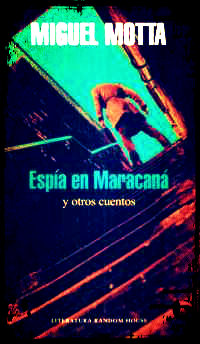

|  | Autor | MIGUEL MOTTA | |
| Editorial | LITERATURA RANDOM HOUSE | ||
| Edición | 2018 | ||
| ISBN | 9789974713529 | ||
| Páginas | 255 | ||
| Precio | $420 |
RECIÉN LLEGADO!
ESPÍA EN MARACANÁ Y OTROS CUENTOS
RESEÑA
Un atleta que descubre un deporte más fiero y más salvaje, unos guerrilleros que juegan su último partido de fútbol, una mujer que encuentra en la competencia la expiación de su dolor y un periodista uruguayo que huye con las tácticas secretas de la selección brasileña para ganar el próximo Mundial son algunas de las historias reunidas en este volumen en las que el juego y el impulso de ganar se apoderan de sus protagonistas despertando en ellos fuerzas subterráneas.
Para Miguel Motta el deporte no se limita a los estadios ni se agota en el ejercicio físico, es una manifestación de la máxima sobre la que se ha construido la cultura occidental: más rápido, más alto, más fuerte. Cuentos de amor, desamor, agonía y sed de triunfo..
AUTOR
Miguel Motta nació en Salto en 1954. En 1993 aparece su primera novela,“Breviario de un mediocampista”, a la que siguen “Código para una muerte”, “Los días del agua” y “Hasta la línea de llegada”. Ha recibido varios premios, entre ellos el Premio Nacional de Literatura y el de Ediciones de Banda Oriental.